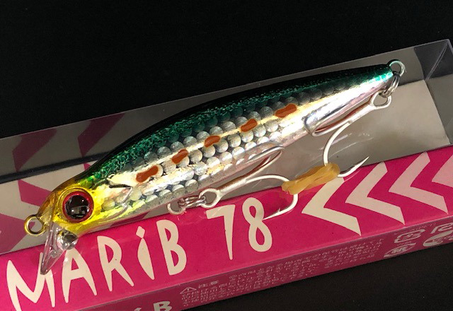
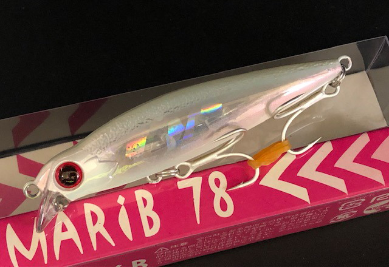
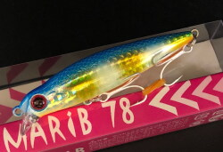

マリブ78
（MARiB78）
マリブ78はMangrove Studio（マングローブスタジオ）のリップ付きシンキングペンシルです。
湾奥のエキスパート大野ゆうきプロデュースの「レンジキープできるシンキングペンシル」。リップは泳ぎを作るためではなく浮き上がりを抑えるためのもので、横風や高い足場でもレンジを保ちやすいのが特徴です。68・78・92の3サイズの中で、水面付近〜80cmを探れる中間サイズです。

画像出典:キングフィッシャー
スペック
- メーカー
- Mangrove Studio（マングローブスタジオ）
- タイプ
- シンキングペンシル（リップ付き）
- 全長
- 78mm
- 自重
- 11.8g
- 有効レンジ
- 水面付近〜80cm
- フック
- #6
- ターゲット
- シーバス
- 価格
- 1,815円（税込）
▼今すぐチェック
マリブ78の特徴
浮き上がりを抑えて、狙ったレンジをキープできるシンペンの元祖
-
浮き上がりを抑えるリップ
リップは泳ぎを作るためではなく、浮き上がりを抑えるためのもの。ラインが横風に煽られる状況や高い足場からでも、足元までレンジをキープしやすくなっています。
-
引き抵抗が分かりやすい
シンペンなのに巻いたときの引き抵抗が感じやすく、今どこを泳いでいるのかがつかみやすいのも特徴。初めてのシンペンにも向いています。
-
安定した飛行姿勢で遠投
同じウエイトのライバルを上回る遠投性能に加え、飛行姿勢が安定していて着水点がブレにくい設計。同じスポットへ繰り返し正確に投げ込めます。
マリブ78の使い方
基本はただ巻き。ロッドを立てて巻けば浅いレンジ、ロッドを下げて巻けば深いレンジと、ティップの位置と巻き速度でレンジを変えられます。
カウントダウンしてから巻き始めれば、さらに深いレンジも探れます。まずは水面付近から少しずつレンジを下げて、魚のいる層を探しましょう。
マリブ78の得意な状況
湾奥の港湾部や河川、干潟。横風が強い日や足場が高い場所など、ほかのシンペンでは浮き上がってしまう状況や、スレた魚に口を使わせたいときに向いています。
ワンポイント
もっと浅いレンジ（〜60cm）や小さいベイトにはマリブ68、深いレンジ（〜120cm）にはマリブ92と、サイズでレンジを使い分けられます。
マリブシリーズの使い分け
| モデル | 全長／自重 | 得意な場面 |
|---|---|---|
| マリブ68 | 68mm／9.2g | 有効レンジ水面付近〜60cm。小型ベイトや浅い場所に |
| マリブ78 | 78mm／11.8g | 有効レンジ水面付近〜80cm。飛距離と扱いやすさのバランス型（本記事のモデル） |
| マリブ92 | 92mm | 有効レンジ水面付近〜120cm。より深いレンジや遠投に |
マリブはサイズごとにボディラインやウエイト配分を変えて作り込まれていて、どのサイズでもレンジキープの性能が出るように仕上げられています。
人気カラー
ラインナップから4色を紹介します（カラー名は販売ページの表記のまま）。
 CC-9 ハッピーレモン大野SP
CC-9 ハッピーレモン大野SP
大野ゆうきスペシャルの定番カラー。濁りや夜でもしっかり見せたいときに。

ML-2GR マルチイワシ大野SPイワシ系のナチュラルカラー。日中や澄み潮で自然に見せたいときに。

CC-7 コーラルピンク定番のピンク系。常夜灯まわりのナイトゲームに。

BH-64 ボラグローボラ系にグローをプラス。イナッコパターンのナイトゲームに。
画像出典:キングフィッシャー
マリブ78に似ているルアー
-
 マリブ68
マングローブスタジオ
詳細はこちら＞
マリブ68
マングローブスタジオ
詳細はこちら＞
全長68mm・自重9.2gの同シリーズ。ベイトが小さいときや浅い場所に。
-
 モアザン ガルバ87S
DAIWA
詳細はこちら＞
モアザン ガルバ87S
DAIWA
詳細はこちら＞
全長87mm・自重19.3gのリップ付きシンペン。同じ大野ゆうき監修で、水面直下をもっと遠くまで探りたいときに。
-
 バンク82S
ポップシークルー
詳細はこちら＞
バンク82S
ポップシークルー
詳細はこちら＞
全長82mm・自重14gのリップ付きシンペン。スラロームでゆっくり見せたいときに。